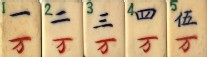
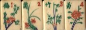

今年の６月６日、我打麻将 さんから次のような質問をいただいた。
花牌の四君子には何か根拠のある順序が存在するのでしょうか？
牌セットによって「梅蘭竹菊」になっているものと「梅蘭菊竹」になっているものとがあるようで、Wikipedia「四君子」では「春夏秋冬」との対応が「蘭竹菊梅」の順になっています。
google による検索結果数:
梅蘭竹菊58700
梅蘭菊竹11100
梅菊蘭竹5710
梅菊竹蘭5440
竹梅菊蘭1390
蘭竹梅菊1380
梅竹蘭菊1210
蘭竹菊梅1050
以下略
たしかに表記順はいろいろあるようで。（^-^；
1920年代、中国製の麻雀牌がアメリカへ盛んに輸出された。その輸出用の牌には漢数字が分からないアメリカ人のために、牌の肩にナンバリングされていた。

もちろん花牌もナンバリングされていたが、それを見るとすべて「1春 2夏 3秋 4冬、1梅 2蘭 3竹 4菊」となっている。

たしかに春夏秋冬の季節感とはマッチしていないが、俗に言う旧暦では現代の２月３日頃が立春＝１月１日（春節）で春（新年）が始まる。つまり現在の気象学的な感覚の春夏秋冬（３月〜５月 春、６月〜８月 夏、９月〜11月 秋、12月〜２月 冬）とは２カ月ほどずれている。
そこでσ(-_-)は、「梅蘭竹菊は、おおよその季節感を表しているだけ」と解釈していた。そこで我打麻将さんの質問にも、「やはり順番は“梅蘭竹菊”が順当と思います」という主旨のレスポンスをした。
ところが台湾の熱血の志豐さんから、「台湾では昔から“梅蘭菊竹”の順で呼称されている」というコメントを頂いた。へ〜と思ったので さっそく調べてみた（って、我が家にある漢和辞典を全部ひっくり返してみただけ....(ノд｀) ）。
すると どの漢和辞典も “ 梅蘭竹菊 ”についての説明はあるが、順番については言及がない。しかし唯一 大漢和辞典（大修館）に、「『集雅齋』（という文献）には“蘭菊梅竹四譜”とあり、「『竹堂四君子書譜』には“文房清供 獨取梅竹蘭菊四君者無也（以下略）” とある」という記述があった。
ふ〜む なるほろ、どうやら古代の中国では“梅蘭竹菊”ではなくて“蘭菊梅竹”とか“梅竹蘭菊”などの順で呼称していたらしい。それがいつの間にか“梅蘭竹菊”、あるいは“梅蘭菊竹”と呼称されるようになったようだ。
そこでつらつら考えるに（^-^； 昔の中国では梅蘭竹菊という４種の植物が重要なのであって、“春夏秋冬という季節を代表する植物”というわけではなかったと思われ。そこで好みによってさまざまな順番で呼称されていたが、語呂のよさで梅蘭竹菊が主流となった。やがて麻雀の花牌としてナンバリングが必要となったとき、もっとも人口に膾炙されていた“梅蘭竹菊”が採用された、と推測する次第。
オマケ 青梅竹馬（チンメーチーマー＝日本で云う“竹馬の友”）
|